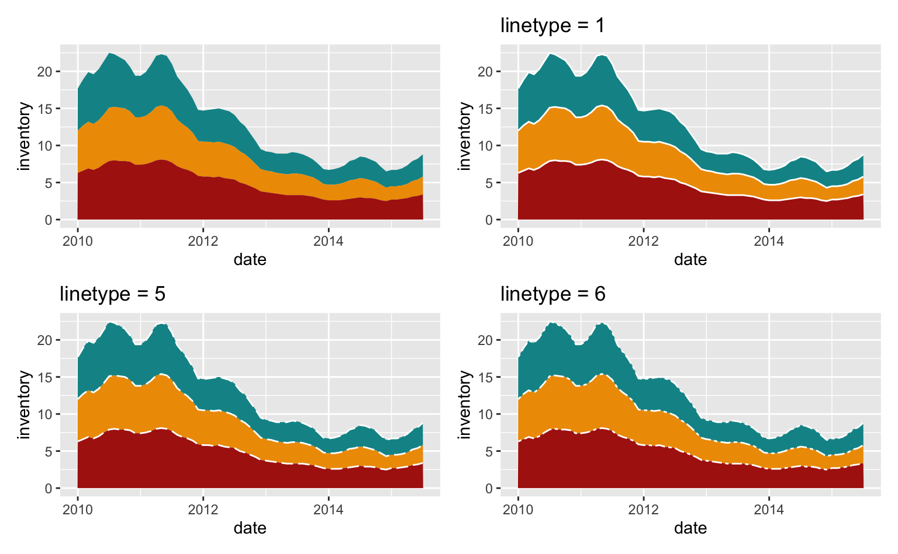

Gráfico de Área
Gráficos de área ajudam a visualizar a dinâmica de um conjunto de valores ao longo do tempo. Essencialmente, um gráfico de área é criado empilhando pequenos gráficos de linha uns sobre os outros e preenchendo a área dentre as linhas com cores. Isto permite que se veja a tendência geral dos dados, assim como a contribuição de cada grupo para o resultado total.
Neste post, vamos discutir como montar um gráfico de área usando o pacote ggplot2 no R. Primeiro, vamos entender os elementos básicos deste tipo de gráfico usando um exemplo com dados simulados. Depois, vamos explorar um caso aplicado, analisando as concessões de crédito imobiliário no Brasil.
ggplot2
Antes de mais nada, precisamos instalar e carregar alguns pacotes. Assim como em posts anteriores, além do pacote ggplot2 vamos utilizar alguns pacotes auxiliares para facilitar a manipulação dos dados.
# Instala o pacote ggplot2 (se necessário)
install.packages(c("dplyr", "tidyr", "ggplot2", "RcppRoll", "GetBCBData"))
# Carrega os pacotes
library("ggplot2")
# Manipulação de dados
library("dplyr")
library("tidyr")
library("RcppRoll")
# Importar dados da API do Banco Central do Brasil
library("GetBCBData")Primeiro, vamos simular alguns dados para o nosso gráfico de área. No primeiro exemplo vamos montar aum base de dados (tibble) com os valores de uma série de vendas anuais de 2000 a 2020.
A coluna ano é uma variável contínua de 2000 a 2005. As colunas venda_a, venda_b e venda_c representam números hipotéticos de venda três lojas distintas (“a”, “b” e “c”).
tbl <- tibble(
ano = 2000:2005,
venda_1 = c(20, 24, 23, 27, 25, 26),
venda_2 = c(30, 22, 17, 23, 21, 18),
venda_3 = c(18, 19, 17, 17, 18, 19)
)A tabela tem a forma abaixo.
| ano | venda_1 | venda_2 | venda_3 |
|---|---|---|---|
| 2000 | 20 | 30 | 18 |
| 2001 | 24 | 22 | 19 |
| 2002 | 23 | 17 | 17 |
| 2003 | 27 | 23 | 17 |
| 2004 | 25 | 21 | 18 |
| 2005 | 26 | 18 | 19 |
Usamos a função geom_area() para criar um gráfico de área. Esta função recebe os argumentos x e y, que mapeiam as variáveis de dados no eixo x e no eixo y do gráfico, respectivamente.
O código abaixo monta um gráfico de área que mostra o número de vendas na loja 1.
ggplot(data = tbl) +
geom_area(aes(x = ano, y = venda_1))
Para adicionar as vendas das outras lojas precisamos remodelar o formato dos nossos dados. Nossos dados estão em formato “wide”, no qual cada variável (vendas) é uma coluna distinta e cada observação é uma linha. O ggplot2 segue os princípios de tidy data e funciona melhor com dados em formato “long”, onde cada linha é uma observação única.
Convertemos os nossos dados para o formato “long” utilizando a função pivot_longer() da seguinte maneira:
long <- pivot_longer(
tbl,
venda_1:venda_3,
names_to = "grupo",
values_to = "total")Agora cada linha representa o número de vendas em uma loja específica e num ano específico.
| ano | grupo | total |
|---|---|---|
| 2000 | venda_1 | 20 |
| 2000 | venda_2 | 30 |
| 2000 | venda_3 | 18 |
| 2001 | venda_1 | 24 |
| 2001 | venda_2 | 22 |
| 2001 | venda_3 | 19 |
| 2002 | venda_1 | 23 |
| 2002 | venda_2 | 17 |
| 2002 | venda_3 | 17 |
| 2003 | venda_1 | 27 |
| 2003 | venda_2 | 23 |
| 2003 | venda_3 | 17 |
| 2004 | venda_1 | 25 |
| 2004 | venda_2 | 21 |
| 2004 | venda_3 | 18 |
| 2005 | venda_1 | 26 |
| 2005 | venda_2 | 18 |
| 2005 | venda_3 | 19 |
Agora que temos nossos dados preparados, podemos montar nosso gráfico de área. Além dos argumentos x e y, também vamos especificar o argumento fill para indicar qual variável deve ser utilizada para preencher as cores entre as linhas.
ggplot(data = long) +
geom_area(aes(x = ano, y = total, fill = grupo))
No gráfico acima, as áreas são empilhadas umas sobre as outras. Tipicamente, os grupos com os valores mais altos devem estar no topo da pilha e os grupos com valores mais baixos, na parte inferior. Na prática, a ordem é determinada pela ordem da variável fill.
Variáveis categóricas no R sempre devem ser do tipo factor. Um factor é um tipo especial de string que possui um ordenamento (levels) que define a relação hierárquica entre os grupos.
Imagine que você tem uma série de avaliações que podem ser “Bom”, “Médio” ou “Ruim” armazenadas num vetor chamado feedback. Para estruturar esta variável como factor é preciso definir qual a ordem destes valores. No exemplo abaixo define-se uma relação crescente: de “Ruim” até “Bom”.
feedback <- c("Bom", "Bom", "Médio", "Ruim", "Médio", "Médio")
satisfacao <- factor(feedback, levels = c("Ruim", "Médio", "Bom"))No caso do gráfico acima, como não definimos a ordem da variável categórica, o ggplot2 tenta adivinha-la. De maneira geral, o ggplot respeita a ordem alfabética e a ordem de grandeza numérica. Por isso, no gráfico acima a ordem foi venda_1, venda_2 e venda_3.
Para definir a ordem dos grupos é preciso criar uma variável do tipo factor e especificar o argumento levels. O exemplo abaixo define uma nova ordem para os grupos o que resulta num gráfico diferente.
long_reordenado <- long |>
dplyr::mutate(
grupo = factor(grupo, levels = c("venda_3", "venda_1", "venda_2"))
)
ggplot(data = long_reordenado) +
geom_area(aes(x = ano, y = total, fill = grupo))
Elementos estéticos
Os principais elementos estéticos da função geom_area() são
fill- A cor que preenche a área abaixo da linha.color- A cor da linha.alpha- O nível de transparência das cores.linetype- O tipo de linha (tracejado).linewidth- A espessura da linha.
Os elementos estéticos podem receber dois tipos de valores: constantes ou variáveis. Uma constante é simplesmente um valor (número, texto, etc.) enquanto uma variável é o nome de alguma coluna da base de dados.
No exemplo abaixo o elemento alpha, que controla o nível de transparência é constante alpha = 0.5 e é aplicado de forma uniforme sobre todo o gráfico. Já o elemento fill é variável e definido como fill = grupo dentro da função aes(). Quando mapeamos uma coluna/variável para um elemento estético sempre usamos a função aes() da mesma maneira como fazemos para mapear as variáveis x e y.
Como a variável grupo é mapeada usamos uma função especial scale_fill_manual() para definir as suas cores e para controlar a legenda.
ggplot(data = long) +
geom_area(aes(x = ano, y = total, fill = grupo), alpha = 0.5) +
# Define as cores e controla a legenda
scale_fill_manual(
# Título da legenda
name = "Lojas",
# Texto da legenda
labels = c("Loja 1", "Loja 2", "Loja 3"),
# Cores
values = c("#0a9396", "#ee9b00", "#ae2012"))
Exemplo: Crédito Direcionado
Agora vamos seguir para um exemplo aplicado. Vamos explorar o volume de crédito direcionado para pessoas físicas no Brasil. Para importar os dados vamos usar o pacote GetBCBData que interage com a API do Banco Central do Brasil e que traz os dados já no formato “long” dentro do R.
O código abaixo importa as séries de tempo e identifica elas. A manipulação de dados é feita usando funções do pacote dplyr. Neste momento, não é necessário entender a fundo a manipulação dos dados.
# Códigos numéricos das séries de crédito direcionado para Pessoas Físicas
codigos <- c(20701, 20704, 20708, 20712, 20713)
# Importa as séries a partir de 01/mar/2011
series <- gbcbd_get_series(codigos, first.date = as.Date("01-03-2011"))
# Cria uma coluna chamada linha_credito indicando qual a linha de crédito
series <- series |>
dplyr::mutate(
linha_credito = dplyr::case_when(
id.num == 20701 ~ "Rural",
id.num == 20704 ~ "Imobiliário",
id.num == 20708 ~ "BNDES",
id.num == 20712 ~ "Microcrédito",
id.num == 20713 ~ "Outro"
)
)Vamos montar um gráfico simples que mostra a composição e evolução do crédito direcionado.
# Plota o gráfico
ggplot(data = series) +
geom_area(aes(x = ref.date, y = value, fill = linha_credito))
O gráfico acima pode ser melhorado de diversas formas. Vamos explorar algumas opções.
Reordenando os grupos
Pelo gráfico, vemos que o crédito rural e o crédito imobiliário são as linhas de crédito mais expressivas. O código abaixo reordena o nível dos grupos para dar mais destaque ao crédito imobiliário e ao crédito rural.
series <- series |>
dplyr::mutate(
linha_credito = factor(
linha_credito,
levels = c("Imobiliário", "Rural", "BNDES", "Microcrédito", "Outro"))
)
ggplot(data = series) +
geom_area(aes(x = ref.date, y = value, fill = linha_credito))
Trocando as cores
A escolha automática de cores do ggplot raramente é satisfatória. Podemos escolher novas cores manualmente usando a função scale_fill_manual(). Além disso, também adicionamos um título mais apropriado para a legenda das cores.
ggplot(data = series) +
geom_area(aes(x = ref.date, y = value, fill = linha_credito)) +
# Define a cor dos grupos e adiciona um título na legenda
scale_fill_manual(
name = "Linha de Crédito",
values = c("#005f73", "#94d2bd", "#ee9b00", "#bb3e03", "#9b2226")
)
Uma solução mais prática é utilizar uma paleta pré-definida de cores. A função scale_fill_brewer(), por exemplo, possui várias paletas importadas do Color Brewer.
ggplot(data = series) +
geom_area(aes(x = ref.date, y = value, fill = linha_credito)) +
# Define a cor dos grupos e adiciona um título na legenda
scale_fill_brewer(
name = "Linha de Crédito",
type = "qual",
palette = 6
)
Ajustando eixos e legendas
Para ajustar os eixos utilizamos as funções scale_. No código abaixo a função scale_y_continuous() altera o eixo-y de três formas: primeiro, o argumento breaks define os números que devem ser destacados no eixo; segundo, o argumento labels modifica a aparência destes números no gráfico; por fim, limits estabelece os limites inferior e superior do eixo-y.
A função scales::label_number(big.mark = ".") pode parecer um pouco confusa, mas ela simplesmente informa que o sinal de ponto “.” deve ser utilizado como separador de milhar. Assim 10000 é convertido para 10.000. Na prática ela faz o mesmo que a função base format().
Por fim, colocamos a legenda na parte superior do gráfico usando a função theme().
ggplot(data = series) +
geom_area(aes(x = ref.date, y = value, fill = linha_credito)) +
scale_fill_brewer(name = "Linha de Crédito", type = "qual", palette = 6) +
# Modifica o comportamento do eixo-y
scale_y_continuous(
breaks = seq(0, 60000, 10000),
labels = scales::label_number(big.mark = "."),
limits = c(0, 60000)
) +
# Coloca a legenda na parte superior do gráfico.
theme(legend.position = "top")
Adicionando títulos e um tema
Para adicionar títulos o modificar o nome de cada eixo utilizamos a função labs() como no código abaixo. Para este gráfico escolhemos um tema neutro com fundo branco theme_minimal().
ggplot(data = series) +
geom_area(aes(x = ref.date, y = value, fill = linha_credito)) +
scale_fill_brewer(name = "Linha de Crédito", type = "qual", palette = 6) +
scale_y_continuous(
breaks = seq(0, 60000, 10000),
labels = scales::label_number(big.mark = "."),
limits = c(0, 60000)) +
# Define o título e o nome dos eixos
labs(
title = "Evolução das concessões de crédito direcionadas",
caption = "Fonte: Banco Central do Brasil.",
# Omite o nome do eixo-x
x = NULL,
y = "Milhões (R$)"
) +
# Insere um tema minimalista com fundo branco
theme_minimal() +
theme(legend.position = "top")
Suavizando a série
Por fim, pode-se suavizar a série para reduzir o impacto da sazonalidade na visualização. Isto não é uma decisão puramente estética, pois modifica os dados e troca a ênfase do gráfico: enxerga-se, agora, a tendência dos dados.
Há muitas maneiras de se fazer isto. Pode-se, por exemplo, dessazonalizar os dados usando X-13 ARIMA; pode-se extrair a tendência das séries utilizando algum filtro linear como de médias móveis, Holt-Winters, filtro HP, etc.
Uma escolha bastante simples é simplesmente somar as últimas doze observações e criar uma janela móvel. Assim temos as concessões acumuladas nos últimos doze meses.
Para calcular esta soma utilizamos a função RcppRoll::roll_sumr(). Como a magnitude dos valores aumenta, dividimos o valor final por mil (agora os valores estão em bilhões de reais).
series <- series |>
dplyr::group_by(linha_credito) |>
dplyr::mutate(soma_12 = RcppRoll::roll_sumr(value, n = 12) / 1000) |>
dplyr::ungroup()
ggplot(data = series) +
geom_area(aes(x = ref.date, y = soma_12, fill = linha_credito)) +
geom_hline(yintercept = 0) +
scale_fill_brewer(
name = "Linha de Crédito",
type = "qual",
palette = 6) +
labs(
title = "Evolução das concessões de crédito direcionadas",
caption = "Fonte: Banco Central do Brasil.",
x = NULL,
y = "R$ (bilhões)") +
theme_minimal() +
theme(
legend.position = "top"
)
Exemplo: Demografia
Vamos explorar algumas tendências demográficas do Brasil. Os dados são do projeto de projeções populacionais da ONU (World Population Prospects) e estão disponíves em formato csv e xlsx no site.
A base que vamos usar foca somente em dados do Brasil e do mundo. A tabela contém as estimativas passadas e projeções futuras da população em grupos de cinco anos (0-4, 5-9, 10-14, …, 100+).
Para ler os dados usamos a função read_csv(). Note que esta função está importando os dados diretamente da internet.
# Importa a base de dados
wpp <- read_csv("data/...")
# Seleciona apenas dados sobre o Brasil entre os anos de 2000 e 2050.
brazil <- wpp |>
dplyr::filter(
location == "Brazil",
year >= 2000,
year <= 2050
)
# Soma o total da população a cada ano
pop <- brazil |>
dplyr::group_by(year) |>
dplyr::summarise(population = sum(pop_total))
# Soma o total da população por grupos de idade a cada ano
pop_group <- brazil |>
dplyr::group_by(year, age_group) |>
dplyr::summarise(population = sum(pop_total))A tabela pop apresenta a população total projetada para cada ano e tem o formato abaixo.
head(pop)| year | population |
|---|---|
| 2000 | 174693 |
| 2001 | 177055 |
| 2002 | 179369 |
| 2003 | 181584 |
| 2004 | 183674 |
| 2005 | 185770 |
Vamos combinar a função geom_area() com outras duas: uma para fazer pontos e outra para traçar uma linha horizontal no zero do eixo-y. Para desenhar os pontos vamos utilizar a função geom_point() e para traçar a linha horizontal, geom_hline(). Para manter um padrão de cores vamos escolher uma constante #2a9d8f (um tom de verde-azulado).
O código abaixo gera uma espécie de gráfico de linha, com pontos, com uma região sombreada. Note que os elementos estéticos fill e color são constantes.
col = "#2a9d8f"
ggplot(data = pop, aes(x = year, y = population)) +
geom_area(alpha = 0.5, fill = col, color = col) +
# Linha horizontal no 0
geom_hline(yintercept = 0) +
# Pontos para destacar as observações
geom_point(color = col)
Podemos combinar o gráfico acima com a função facet_wrap() para montar quatro gráficos, mostrando a evolução da população dentro de cada um dos grupos.
O grupo de crianças (0 a 14 anos) cai, enquanto o grupo de idosos (65+) aumenta expressivamente. O grupo de adultos (25-64) aumenta até atingir um máximo ao redor de 2040 e depois passa a cair suavemente. Por fim, o grupo de adolescentes/jovens (15-24) cai suavamente.
ggplot(data = pop_group, aes(x = year, y = population)) +
geom_area(alpha = 0.5, fill = col, color = col) +
geom_hline(yintercept = 0) +
geom_point(color = col) +
facet_wrap(~age_group)
Assim como nos exemplos anteriores, podemos também empilhar os grupos e ter uma noção da representatividade de cada um deles no total da população.
ggplot(data = pop_group) +
geom_area(aes(x = year, y = population, fill = age_group)) +
scale_fill_brewer(type = "qual", palette = 6) +
theme(legend.position = "top")
Resumindo
Um dos principais benefícios de usar gráficos de área é que eles permitem visualizar facilmente a tendência geral dos dados e a contribuição de cada grupo individual para o total. No geral, gráficos de área são uma ferramenta útil para visualizar a magnitude da mudança ao longo do tempo e comparar diferentes categorias ou grupos de dados uns com os outros.
Neste post vimos a importância de usar dados em formato “long” e de reordenar as variáveis categóricas usando a função factor(). Também vimos que elementos estéticos podem assumir valores constantes ou variáveis.
Abaixo seguem algumas recomendações finais na hora de fazer gráficos de área.
- Não utilize um gráfico de área para representar mais do 5 ou 6 grupos.
- Escolha manualmente a ordem dos grupos para facilitar a visualização do gráfico.
- Coloque a legenda de cores acima ou abaixo do gráfico para poupar espaço.